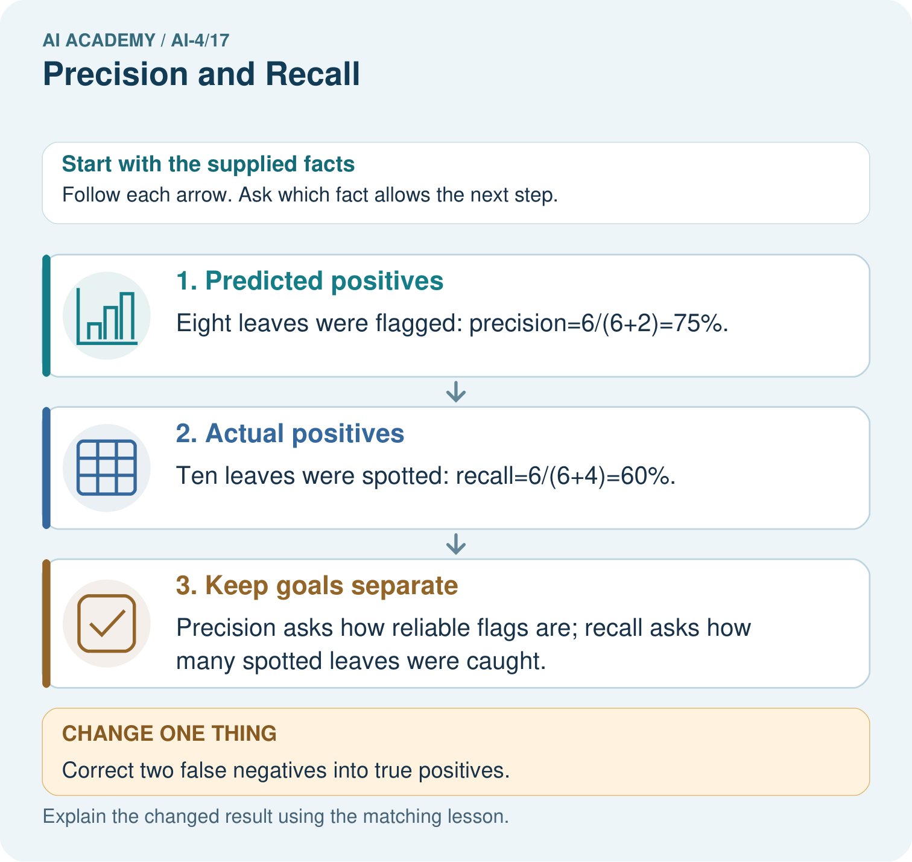

AI Academy · Level 4 · Grade 9 · Week 17 · Teacher guide
Precision and Recall
Learn to understand, design, build, test and explain AI systems responsibly.
Project: Responsible Plant Classifier
Teacher guide · 1 of 7
Precision and Recall
Teach the learning cycle
Primary target: Choose the denominator that answers the question
| Session | Sequence and minutes | Resources |
|---|---|---|
| Session 1 · Understand · 45 min | 0–7: recall and prerequisite; 7–15: inspect the concrete case and predict; 15–30: teacher models the worked trace; 30–40: learners explain a step using the text and visual; 40–45: check the core idea. | Sections 1–6; record the brief recall in the workbook. |
| Session 2 · Practise · 45 min | 0–5: retrieve the procedure; 5–15: W2 completion practice; 15–23: explain and check with a partner; 23–30: each learner answers the misconception check; 30–40: targeted reteaching or a harder variation; 40–45: prepare the investigation. | Sections 7–10; use the matching workbook W2 and misconception check. |
| Session 3 · Investigate and transfer · 45 min | 0–5: retrieve the decision rule; 5–20: investigate or trace; 20–30: start the independent case; 30–38: connect the project; 38–43: act on feedback; 43–45: plan the return check. | Sections 9 and 11–14. Give extra time to finish the full task set; use Section 15 when the week includes a coding lab. |
This is a starting allocation of 135 minutes, not a validated duration. Preserve all named topics. Schedule extra time for connected examples, the full investigation, independent cases and project building. Repeated copies of a case share one recorded attempt; they are not new evidence.
Retrieval answer guidance
Accuracy and Imbalance
Without opening the old lesson, explain one key idea from Accuracy and Imbalance. Give an example and a mistake that the idea helps you avoid.
Look for: Explain why overall accuracy can hide failure on a less common class
Reference example, not the only acceptable wording: The training-majority rule always predicts clear. Matrix [[16,0],[4,0]] gives 16/20=80 percent, FP=0,FN=4. It misses all four blocked cases, so the overall score hides complete failure on that evaluated class.
Scores and Calibration Intuition
Without opening the old lesson, explain one key idea from Scores and Calibration Intuition. Give an example and a mistake that the idea helps you avoid.
Look for: Interpret calibration using groups of forecasts
Reference example, not the only acceptable wording: Teacher explanation: 2/10=.2 and 6/10=.6.
Decision Trees
Without opening the old lesson, explain one key idea from Decision Trees. Give an example and a mistake that the idea helps you avoid.
Look for: Fit a root question and leaf predictions from training examples
Reference example, not the only acceptable wording: The root asks near, with branches 0 and 1. Leaves predict clear for 0 and blocked for 1. Depth is one. Training labels determined both leaf majorities and the error comparison that selected near rather than tall.
Use the student module and workbook section with this exact week title. The worked case, independent question and answers below form one aligned lesson sequence.
What the learner must demonstrate
TP=9,FP=3,FN=6,TN=12. Compute precision and recall. What happens to precision when a system predicts no positives?
Concept to explain
Precision measures how many positive predictions are right; recall measures how many actual positives are found.
| Term | Meaning |
|---|---|
| precision | TP divided by TP plus FP |
| recall | TP divided by TP plus FN |
| false alarm | false-positive prediction |
| miss | false-negative prediction |
Prepare the class
Use the supplied scenario, student illustrations and blank paper. For numeric work, offer counters or a calculator after learners show the setup. Fictional records are supplied; personal data and paid accounts are unnecessary.
Allow 80 minutes: recall 8; explanation 12; worked demonstration 15; guided practice 20; independent assessment 15; project and reflection 10. Extend the lab into a second session when needed.
Preparation for the connected explanation
Teach two 45-minute sessions. This week focuses on precision recall and denominators. Model the worked example first, collect the new W 4 case independently before feedback, and use the fresh retry to check transfer. Award credit for traceable reasoning and bounded claims, including justified uncertainty.
Readiness answer
The common class can dominate the total; inspect the full confusion matrix and class counts.
Printed student lesson and workbook
Paper, pencils and a calculator for fractions
The fictional examples and a blank evidence table
Optional Python 3 editor; no external packages or AI accounts required
End goal for the pictorial case
By the end, I can explain precision and recall using a traced example and a stated limitation.
This added worked case illustrates the week’s main idea. Retain all original and connected topics; schedule its practice within the teaching cycle.
Teacher guide · 2 of 7
Explain the mechanism
Explain the mechanism
Trace the information, fitted behavior, and evaluation proof separately.
QUESTION Calculate both and choose a priority for two consequence scenarios.
MODEL IDEA Precision measures how many positive predictions are right; recall measures how many actual positives are found.
PROOF NEEDED Use an unseen case, visible calculation, error analysis, and a stated limitation.
UNDER THE HOOD Confusion counts: TP=8, FP=2, FN=4, TN=16. Precision = 8 ÷ (8+2) = 80%.
Draw a fresh data → model → prediction → evaluation trace:
Predict first. Then check each step. A correct answer without visible evidence cannot be audited.
STEP 1 Confusion counts: TP=8, FP=2, FN=4, TN=16.
STEP 2 Precision = 8 ÷ (8+2) = 80%.
STEP 3 Recall = 8 ÷ (8+4) ≈ 67%.
STEP 4 Choose threshold and human review by comparing the cost of two false alarms with four misses.
CHECK Verify the denominator, unit, split, class definition, and data version before interpreting a score.
Recalculate, retrace, or restate the evidence independently:
Concrete teaching case
Positive is spotted: TP=8, FP=2, FN=4.
Compute precision and recall.
Exact explanation to model
Precision=8/10=80%; recall=8/12 about 66.7%. Denominators are predicted positives and actual positives respectively.
Explain the added worked example
Blocked remains positive. Precision asks: of the cases flagged blocked, how many were actually blocked according to the reference? Recall asks: of all reference-blocked cases, how many were found? Both use true positives, but they answer different questions. Keep reference rows and prediction columns ordered clear then blocked.
Use fictional classroom data throughout this investigation. Keep the task, units, reference labels and data split visible as you reason. Earlier weeks supplied the model-building process; this week examines precision recall and denominators.
For matrix [[12, 4],[1, 3]], TN=12, FP=4, FN=1, TP=3. There are seven predicted positives and four reference positives. Precision is 3/7, about 42.9 percent. Recall is 3/4=75 percent. Accuracy is 15/20=75 percent. A correct denominator matters more than memorizing a percentage.
Trace the calculation on paper before running this optional Python check. Use the stated fictional inputs and compare intermediate values. The code checks this example; your independent workbook case uses different evidence.
Key terms
| Term | Meaning |
|---|---|
| Precision | True positives divided by all predicted positives |
| Recall | True positives divided by all reference positives |
| Denominator | The group counted in the bottom of a fraction |
| Undefined | A ratio with no valid value because its denominator is zero |
Model the reasoning aloud
Use the complete worked example below before asking learners to complete W2. Reveal a small part, invite a prediction, then explain the deciding step. These teacher notes contain solutions; do not reveal the independent case answer during modelling.
Precision recall and denominators at a glance
| Thinking move | Teacher prompt |
|---|---|
| Plan | What is given? What is the question? Which procedure fits these facts? |
| Do | Point to each input and intermediate step in the worked trace. Name the rule that allows the next step. |
| Check | Does the output answer the question? Which assumption or limitation prevents a larger claim? |
Use the diagram and verbal explanation together. Ask learners to match a sentence to a specific visual step; do not assign learners fixed visual or auditory learning styles.
A pictorial worked case: Precision and Recall
Put precision and recall denominators on the picture instead of memorising names.
The facts we will use
Positive means spotted. TP=6, FP=2, FN=4, TN=8 in twenty fictional leaves.
All inputs and outcomes in this worked example are invented classroom data; no real model run is claimed.


Read the picture one step at a time
Why this result follows
Read the picture in order. Precision asks how reliable flags are; recall asks how many spotted leaves were caught. The arrows show which recorded input or intermediate result each decision uses. Explain the deciding step aloud before checking the changed case; pointing to the final answer alone does not show how it follows.
What this example does not establish
If a relevant denominator is zero, report that metric as undefined under the chosen convention rather than silently inventing success.
Change one thing in the pictured case
Change: Correct two false negatives into true positives.
Prediction: Precision becomes8/10=80%; recall becomes8/10=80%.
Reason: TP becomes8 and FN 2; FP remains2, so the two denominators happen to equal10.
Ask while showing the picture
Cover the result. Ask learners to name the inputs and predict the next step. Uncover one step, connect the icon to the actual procedure, and explain its evidence. Then change the supplied condition and compare. The picture is a representation; it does not document execution of a real AI model.
Teacher guide · 3 of 7
Demonstrate and guide practice
Demonstrate and guide practice
Board sequence
Write the given facts: Positive is spotted: TP=8, FP=2, FN=4.
Write the question to explain: Compute precision and recall.
Reveal after predictions: Precision=8/10=80%; recall=8/12 about 66.7%. Denominators are predicted positives and actual positives respectively.
Keep for an independent attempt: With disease positive, TP=6, FP=2 and FN=4. Calculate precision and recall, showing both denominators.
Classroom dialogue
Ask: Which facts are given, and which would we have to assume? Learners mark relevant details before discussing answers.
Say: Predict first. Show the rule, information path or calculation that would produce the result. A correct guess is not yet an explanation.
Reveal reasoning one step at a time. Explain why a tempting alternative fails. Write units and denominators for arithmetic, trace conditions for decisions, and identify supporting sources for claims.
In pairs, one learner solves while the other checks evidence; exchange roles. Remove the worked answer before independent assessment.
Model these guided questions
Guided response: Precision 3/7 about 42.9 percent, recall 3/4=75 percent, accuracy 15/20=75 percent. Exit response: Request TP, FP, FN, sample size, positive class and precision. Finding every positive can coexist with many false alarms.
Case-specific teaching sequence
| Stage | Teacher action |
|---|---|
| Session 1 start to 7 minutes | Use the prerequisite question: Why can 80 percent accuracy hide missed blocked cases? Check the explanation before proceeding. |
| 7 to 18 minutes | Read the opening and model the worked evidence. Ask students to identify precision in context. |
| 18 to 32 minutes | Complete W 1 and W 2 with support: identify the groups; calculate both ratios. Require the evidence, not only the final response. |
| 32 to 45 minutes | Read the visual row by row. Collect the guided explanation and compare reasoning in pairs. Trace the Python check after the paper calculation. |
| Session 2 start to 8 minutes | Retrieve the distinction between precision and recall. Invite a counterexample to an overconfident claim. |
| 8 to 20 minutes | Discuss the application and complete W 3: Explain precision and recall for [[16, 0],[4, 0]]. |
| 20 to 35 minutes | Collect W4 independently before giving hints. Assess these outcomes: Choose the denominator that answers the question; Calculate precision and recall with a declared positive class. Record any support used. |
| 35 to 45 minutes | Use W 5 and the exit response to assess limits. Give targeted feedback, then the fresh retry. Save evidence of independent understanding. |
Reduce help deliberately
Completion task: Calculate precision, recall and accuracy for the worked matrix.
Teacher check: Teacher explanation: Precision 3/7 about 42.9 percent, recall 3/4=75 percent, accuracy 15/20=75 percent.
Start by identifying the given inputs together. Leave the intermediate steps blank. If needed, model one step, then withdraw that help on the next step. Move to a full trace only when the partial trace is understood. For partners, alternate explainer and checker; collect a response from every learner before discussion.
Individual reasoning check
Use the worked case for Precision recall and denominators. Proposed explanation: “A final answer is enough”. Decide whether this explanation is supported. Point to the step or supplied fact that decides; explain your repair if needed.
Expected correction: Ask for the relevant counts, units, procedure or saved record. For this week: Predicted positives TP+FP=7; reference positives TP+FN=4.
Collect explanations, not only yes/no votes. If a misunderstanding is common, re-model the relevant step for the class. If it affects a few learners, give a short targeted group explanation while others solve a more demanding variation.
Pictorial practice question
Were the original precision and recall denominators the same? Point to the relevant step in the picture, then write the changed result and the rule or evidence that supports it.
Reasoned teacher answer
No. Precision used8 predicted-positive leaves; recall used10 actual-positive leaves. Their meanings remain distinct even when numbers later coincide. Changed-case check: Precision becomes8/10=80%; recall becomes8/10=80%. TP becomes8 and FN 2; FP remains2, so the two denominators happen to equal10.
Changed-case reasoning: Precision becomes8/10=80%; recall becomes8/10=80%. TP becomes8 and FN 2; FP remains2, so the two denominators happen to equal10.
Collect each learner’s explanation before discussion. Use the first missing connection between input, deciding step and result to choose support. This question is worked-case practice, not fresh mastery evidence.
Teacher guide · 4 of 7
Run the weekly evidence lab
Run the weekly evidence lab
Keep the test conditions fixed, record every result, and change only one planned factor.
1. Write the hypothesis and expected evidence before running.
2. Metric Tradeoff Lab: compute both metrics for two thresholds, map errors to consequences, and defend a choice.
3. Run one normal, one boundary, one missing, and one shifted case.
4. Calculate the metric from raw counts or row-level errors.
5. Interpret what changed, what did not, and what remains unsafe or unknown.
Make the lab runnable
Use the concrete case as the shared normal case and the independent question as a second case. Each pair creates a boundary or missing-information case and predicts its result before testing. Keep the expected result separate from an observed mistake.
| Record | What to capture |
|---|---|
| Input or evidence | Exact data, instruction or claim |
| Expected result | Answer or safe fallback declared before the run |
| Observed result | Actual result, including errors |
| Explanation | Rule, calculation or evidence explaining the outcome |
| Next test | One justified change and a new prediction |
Diagnose and reteach
MISCONCEPTION TO REPAIR Precision and recall are two names for the same accuracy calculation.
For guessing, return to given facts and request a trace. For vocabulary without application, use one example and one non-example. For arithmetic errors, check the setup before the calculation. Finish with a different uncoached case before recording mastery.
Address these additional misconceptions
A final answer is enough: Ask for the relevant counts, units, procedure or saved record. For this week: Predicted positives TP+FP=7; reference positives TP+FN=4.
A stronger claim makes a stronger project: Request TP, FP, FN, sample size, positive class and precision. Finding every positive can coexist with many false alarms.
The new case can be copied from the example: The independent task changes the evidence. Require a fresh explanation: TP=6, FP=2, FN=3. Precision 6/8=75 percent; recall 6/9 about 66.7 percent; accuracy 14/19 about 73.7 percent.
Match the support to the first error
| What the response shows | Next teaching action |
|---|---|
| Missing or misread facts | Read the case aloud, mark supplied versus unknown facts, and let the learner restate it. |
| Wrong procedure | Return to the deciding step in the worked case. Contrast it with the proposed incorrect explanation. |
| Arithmetic or implementation error | Trace intermediate values or lines; preserve the first mismatch and retry that step. |
| Correct result without a reason | Ask for a trace and a changed case before marking independent understanding. |
| An unsupported wider claim | Ask which supplied evidence supports the claim and which further observation would be needed. |
Offer an oral explanation, drawing, enlarged visual or fewer examples when that removes a reading/writing barrier. Keep the same reasoning goal. Stretch secure learners by changing a boundary or assumption and asking them to defend the effect, not simply by assigning more of the same questions.
Teacher guide · 5 of 7
Assess and explain the answers
Assess and explain the answers
Worked case answer
Precision=8/10=80%; recall=8/12 about 66.7%. Denominators are predicted positives and actual positives respectively.
Independent question
With disease positive, TP=6, FP=2 and FN=4. Calculate precision and recall, showing both denominators.
Expected independent answer
Precision is 6/(6+2) = 75%. Recall is 6/(6+4) = 60%. Precision counts predicted positives; recall counts actual positives.
What counts as evidence
| Criterion | 0 points | 1 point | 2 points |
|---|---|---|---|
| Result | Incorrect or absent | Partly correct | Correct with necessary conditions |
| Reasoning | No supporting trace | Some steps | Clear mechanism, calculation or source support |
| Limit | Overclaims certainty | Vague limitation | Relevant uncertainty or missing fact |
| Transfer | Copies without adapting | Adapts with prompts | Solves a changed case independently |
Use 6/8 as a classroom checkpoint, with 2 required for both Result and Reasoning. This is a proposed teaching rule, not a validated certification threshold. Do not count a coached answer as independent mastery; correct unsafe or unsupported claims regardless of total.
Feedback
Ask the learner to find the evidence that challenges this claim: “Precision and recall use the same denominator.” Keep the first attempt and an uncoached retry separate.
Original transfer answer
Precision=9/12=75%; recall=9/15=60%. With no predicted positives, TP+FP=0 so precision is undefined mathematically; reporting software may apply a convention that must be disclosed. Do not interpret a zero-denominator convention as observed performance.
Explanations for the additional workbook examples
W1 Identify the groups
For the worked matrix, give predicted-positive and reference-positive totals.
Teacher explanation: Predicted positives TP+FP=7; reference positives TP+FN=4.
Predicted positives include true positives and false positives, so add TP + FP to get 7. Reference positives include true positives and false negatives, so add TP + FN to get 4. These are different groups: one is defined by the prediction, the other by the reference label.
W2 Calculate both ratios
Calculate precision, recall and accuracy for the worked matrix.
Teacher explanation: Precision 3/7 about 42.9 percent, recall 3/4=75 percent, accuracy 15/20=75 percent.
W3 Handle no flags
Explain precision and recall for [[16, 0],[4, 0]].
Teacher explanation: Precision is undefined, with no flags; recall is 0/4=0. This does not mean excellent detection.
W4 Apply independently
Use [[8, 2],[3, 6]]. Give TP, FP, FN, precision, recall and accuracy.
Teacher explanation: TP=6, FP=2, FN=3. Precision 6/8=75 percent; recall 6/9 about 66.7 percent; accuracy 14/19 about 73.7 percent.
W5 Limit a claim
A team reports recall 100 percent but hides precision and counts. What is missing?
Teacher explanation: Request TP, FP, FN, sample size, positive class and precision. Finding every positive can coexist with many false alarms.
Assess independent transfer
Selected case: Use [[8, 2],[3, 6]]. Give TP, FP, FN, precision, recall and accuracy.
Selected case answer
Teacher explanation: TP=6, FP=2, FN=3. Precision 6/8=75 percent; recall 6/9 about 66.7 percent; accuracy 14/19 about 73.7 percent.
| Dimension | Evidence required |
|---|---|
| Explanation | Names the applicable idea or procedure and ties it to the supplied facts. |
| Trace and result | Preserves the given inputs and shows the relevant intermediate steps; distinguishes a prediction from an observed execution. |
| Limits | States the assumptions, missing evidence or conditions under which the result would change. |
Record each dimension as not yet, with support, or independent. Accept a valid alternative procedure with a defensible trace. Do not penalise an honestly recorded model failure if the learner correctly explains its evidence and limits.
Feedback that the learner uses
Name the earliest unsupported step and give one action to repair it. Have the learner make that repair now and explain why. Then assess the relevant skill on a fresh, fully specified case. Confirm it was not previously practised with feedback; solve and check the new case before assigning it. A follow-up design prompt is a starting brief, not automatically an equivalent test.
Teacher guide · 6 of 7
Connect and extend learning
Connect and extend learning
Responsible Plant Classifier
Set a Plant Classifier review threshold and explain which error type it prioritizes and who makes the final decision.
Keep the decision, input, result, explanation and remaining limitation in the project evidence record. Retrieve this record next week rather than restarting the project.
Support and stretch
Use a tiny labelled dataset, explicit units and a named positive class. Stretch: require a baseline, held-out evaluation and subgroup or shifted-condition analysis with denominators.
Exit reflection
Ask for one decision the learner can now justify and one situation requiring more evidence or human review. Confidence ratings are separate from correct independent performance.
Bridge to the next week
Next: Week 18: Error Analysis. Retrieve today’s evidence and identify what carries forward and what is new.
Support and fresh reassessment
Provide a blank evidence table and allow a verbal explanation before writing. Highlight the given conditions without supplying the W 4 conclusion. Use precision and recall in full sentences. Extension: alter one condition in the worked example and explain which conclusion changes and which remains supported.
For independent W 4, require: TP=6, FP=2, FN=3. Precision 6/8=75 percent; recall 6/9 about 66.7 percent; accuracy 14/19 about 73.7 percent. Fresh retry [[5, 1],[2, 4]]: precision 4/5=80 percent, recall 4/6 about 66.7 percent, accuracy 9/12=75 percent. Require both denominators. Mark each criterion as independent, supported or not yet demonstrated. Reassess the reasoning after feedback; do not replace the first attempt silently.
Next week: Thresholds and consequences. Carry forward the saved evidence and the distinction between development choices and justified claims.
Plan the delayed return
Suggested return points in this level: ai-4/18, ai-4/20, ai-4/23. Use actual classroom dates, adjusting for holidays and gaps. One, three and six teaching weeks are scheduling choices, not a claimed optimal spacing.
At a delayed check, ask for the idea from memory and a changed application. Compare with the earlier independent response and record support used. For a new level, revisit the previous capstone before checking the new prerequisites.
| Record | Teacher evidence |
|---|---|
| Learner code and date | |
| Concept and case used; prior exposure | |
| Explanation / trace / limits | |
| Support and first repair | |
| Changed case and delayed outcome | |
| Next teaching action |
Use the evidence to choose reteaching or the next step. A completed page, confidence rating or attractive project does not by itself demonstrate understanding.
Project evidence from this case
For your Responsible Plant Classifier, save the input, procedure, observed result and limitation of this check. Label this worked example as practice; use a different, previously unreviewed case when checking independent understanding.
Teacher guide · 7 of 7
Prepare, teach and assess
Teaching target: Choose the denominator that answers the question
Prepare the labelled worked-case picture, the matching workbook, fictional input cards and a place for individual responses. Check a local Python 3 environment before class; have a paper-trace version ready.
| Session | Plan | Resources |
|---|---|---|
| Session 1 · Understand · 45 min | 0–7: recall and prerequisite; 7–15: inspect the concrete case and predict; 15–30: teacher models the worked trace; 30–40: learners explain a step using the text and visual; 40–45: check the core idea. | Sections 1–6; record the brief recall in the workbook. |
| Session 2 · Practise · 45 min | 0–5: retrieve the procedure; 5–15: W2 completion practice; 15–23: explain and check with a partner; 23–30: each learner answers the misconception check; 30–40: targeted reteaching or a harder variation; 40–45: prepare the investigation. | Sections 7–10; use the matching workbook W2 and misconception check. |
| Session 3 · Investigate and transfer · 45 min | 0–5: retrieve the decision rule; 5–20: investigate or trace; 20–30: start the independent case; 30–38: connect the project; 38–43: act on feedback; 43–45: plan the return check. | Sections 9 and 11–14. Give extra time to finish the full task set; use Section 15 when the week includes a coding lab. |
Before class, solve the supported practice: Calculate precision, recall and accuracy for the worked matrix.
Reasoned practice answer: Teacher explanation: Precision 3/7 about 42.9 percent, recall 3/4=75 percent, accuracy 15/20=75 percent.
Check every learner before discussion: Use the worked case for Precision recall and denominators. Proposed explanation: “A final answer is enough”. Decide whether this explanation is supported. Point to the step or supplied fact that decides; explain your repair if needed.
Misconception repair: Ask for the relevant counts, units, procedure or saved record. For this week: Predicted positives TP+FP=7; reference positives TP+FN=4.
Support: read the exact case aloud, enlarge the labelled picture, supply input cards and model only the first deciding step. Accept a spoken explanation or drawing; retain the reasoning goal.
Extension: Correct two false negatives into true positives. Require a prediction and a reason before comparing. Expected result: Precision becomes8/10=80%; recall becomes8/10=80%. Reason: TP becomes8 and FN 2; FP remains2, so the two denominators happen to equal10.
Independent assessment: withhold the reserved answer until the learner has attempted the new case. Record support separately from correctness.
| Criterion | Not yet | With support | Independent |
|---|---|---|---|
| Explanation | Names an answer without a deciding fact | Uses a hint to link fact and decision | Explains the deciding fact in own words |
| Trace or test | Cannot connect input and result | Completes steps with prompts | Traces or tests a changed case accurately |
| Limits and revision | Claims more than evidence supports | Names a limit after a prompt | States a defensible limit and useful next test |
Project checkpoint: Test changed cases. Keep normal, boundary and failure cases; compare expected and observed results.
Use the weekly teacher answer for topic-specific reasoning. A saved progress tick is an activity record; judge mastery from the learner’s explanation and evidence.